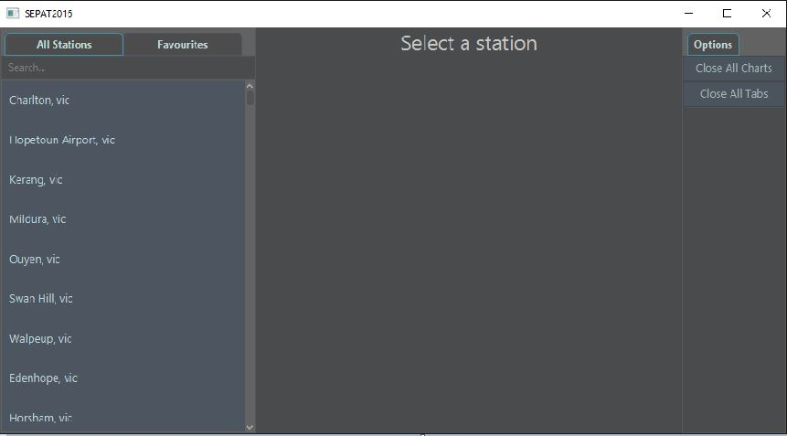
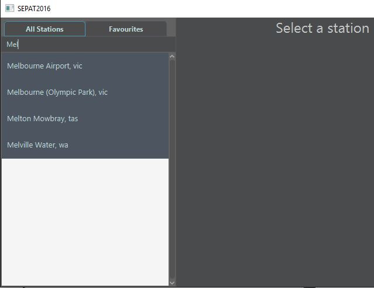

Navigation and Usage
After installation go ahead and open up the program.
This is the heart or "home screen" of the program:
Through here, you can access the information of any weather station throughout Australia and the Antarctic region. At the top you will see a search bar, this is useful for finding a specific station. Just type in your desired location and the system should narrow the list down for you.
Once you have located the perfect location, click on the stations button to display the list of options available to you.
You can already see here a list of average locations over the past 72 hour period, this is essentially what the recent average temperature throughout different time periods of the day has been.
If there is no temperature information over the period, a diamond symbol will be shown for representing a lack of appropriate data available
Further weather information can be explored when clicking on one of the desired buttons to open a new window. The first of which is the 72 hour graph , lets take a look at that now.

This graph represents the change temperature over the last seventy two hour period of time since the most recent reading. Thesse readings are grabbed in thirty minute periods, providing a more recent look at the locations temperature.
following 72 hour graph is the historical data graph:

Here you can see a graph of the temperatures at certain times of the day over the previous month. You can expand the graph by either dragging the corners to a desired size, or expanding it to full screen via the button directly to the left of close. Furthermore, you can click the symbols/details below the graph on the legend to "hide" it's respected line, creating an easier layout and view.
A more detailed analysis of the weather can be found in either of the provided tables (Accessed by clicking their respected buttons).
As the names specify, the 72 hour table is a less dense table featuring basic weather related statistics.
Whilst the historical data table contains a larger and more dense amount and assortment of information over a larger period.
You can expand the sizing of each table the same ways as you would for the graphs previously mentioned, as well as expanding each individidual collumn of data by dragging the sides of the desired Collumn's sub-heading either outwards or inwards.
From here you've gone through almost all of what the program has to offer. The last feature to be explained is the favourites system. In order to make searching for your desired stations easier in the future, you can click the button labelled Add To Favourites after finding a location.
This will add the station in your favourites tab: INSERT FAVOURITES TAB PHOTO.
After closing and opening up the program, you're favourites will be exactly where you let them. So don't worry about losing your list!
Now you are considered to be an expert in our SEPAT 2016 assignment part 1 solution. I hope you enjoy using the application. From now, you can easily locate weather related information to help in your general weather related interests or research.